Este informe es la primera fotografía del terreno económico que tenemos adelante, tomada el 26 de septiembre de 2026 desde CABA, con USD 400 por mes de capital recurrente y una premisa del fundador: usar la inteligencia artificial como fuerza de trabajo principal. No es una lista de ideas: es una selección de oportunidades con evidencia, números con rango, riesgos explícitos y la forma más barata de comprobar cada una.
1. El terreno: una economía de dos velocidades dentro de un shock global. Argentina crece poco (actividad ~+1,8% interanual en julio) pero de forma desigual: energía, minería y agro traccionan; industria y comercio caen bajo la apertura. Afuera, la guerra con Irán mantiene casi cerrado el Estrecho de Ormuz desde marzo: la Agencia Internacional de Energía lo llama la mayor disrupción de oferta de la historia del petróleo, con el Brent cerca de USD 105. Argentina es, por primera vez en décadas, exportadora de energía en ese mundo. Al mismo tiempo el riesgo político crece hacia las elecciones de 2027 (riesgo país ~600 pb, aprobación presidencial estancada en 42%).
2. La oportunidad transversal es un arbitraje de costo de ejecución. El costo de la IA cayó ~95% en dos años (índice de gasto ~USD 1 por millón de tokens en septiembre). Mientras tanto, la mayoría de los servicios pyme sigue siendo analógica: el 87% de las empresas de transporte de cargas opera sin sistemas; los más de 122.000 consorcios de CABA se administran mayormente a mano. En EE.UU., fondos como Thrive Holdings (respaldado por OpenAI) y General Catalyst comprometieron más de USD 2.500 millones para comprar estudios contables y administradores de propiedades y recablearlos con IA. Ese modelo no llegó a Argentina, y a escala micro no necesita millones: necesita un fundador que gane clientes y deje que la IA haga el trabajo de oficina.
3. La ventaja del fundador coincide con el momento. Vive en CABA y conoce logística. Argentina acaba de abrir su comercio (líneas de producción usadas al 25% del arancel, exportación postal sin límite de valor, acuerdo UE–Mercosur vigente desde mayo) y la logística es el cuello de botella de los sectores que crecen: en Vaca Muerta la arena de fractura cuesta USD 22 por tonelada en cantera y USD 158 puesta en el pozo.
4. Cuatro oportunidades se validan ya, con menos de USD 300 cada una.
5. Las normas crean compradores obligados, pero no todos son para nosotros. San Juan obliga a las mineras a comprar 60% en la provincia justo cuando empieza Vicuña (USD 18.100 millones); el Fondo de Asistencia Laboral es obligatorio desde el 1 de noviembre; la norma europea antideforestación rige desde diciembre. Son oportunidades reales, pero su captura depende del ajuste: San Juan queda como opción con socio local; el fondo laboral no deja margen a intermediarios.
6. Las ideas del fundador, evaluadas con números. Seis meses de "precio regalado" en mates, termos y bombillas costarían del orden de USD 20.000 (mediana de la simulación) con valor neto negativo en el caso base: son bienes durables con recompra baja y el único activo que podría quedar es el ranking en Mercado Libre, que se mide con una prueba de semanas y USD 500–1.000. La app de simulación logística tiene un núcleo valioso, pero el riesgo no es el costo de Claude Max: es construir tres meses sin cliente.
7. Con USD 400 por mes el cuello de botella son las horas, no el dinero. Recomendación: Claude Max 5x (USD 100/mes) desde el día uno, USD 180 para experimentos, USD 100 a tesorería en dólares y USD 20 en herramientas. Subir a USD 600–1.000 solo cuando un experimento haya probado el canal.
8. Asimetría a cinco años. La simulación de cartera (con capacidad del fundador limitada a dos unidades escaladas y 15% de probabilidad de que no pueda dedicar las horas) da una mediana de ~USD 2.600/mes de flujo al mes 24 y un patrimonio de ~USD 158.000 al mes 60, contra ~USD 28.500 de la estrategia de solo tesorería con el mismo aporte. En el peor decil se termina con ~USD 10.000 menos que solo ahorrando: ese es el costo de intentar. En un escenario de estrés (probabilidades de éxito × 0,6) la mediana baja a ~USD 48.000. Son hipótesis, no promesas, y se recalibran con cada experimento.
9. Los próximos 90 días son concretos (capítulo 15): curso del registro de administradores y auditor gratuito de expensas; 20 entrevistas y servicio "concierge" a 5 transportistas; un estudio logístico piloto vendido antes de programar; ocho ediciones del medio vertical; cuenta de inversión y política de tesorería.
10. Lo que necesitamos del fundador son doce respuestas (capítulo 16): horas disponibles y franjas, especialidad logística y red, ahorros movilizables, comodidad para vender y matrículas. Cambian el orden de las apuestas.
| Decisión | Detalle | Revisión |
|---|---|---|
| Validar en paralelo | OP-01, OP-02, OP-04 (+ OP-07 como canal; OP-03 ante pedido real) | Comité de fin de octubre |
| No hacer | Precio regalado 6 meses (K11); software genérico de simulación (K12); 15 ideas más en el cementerio | Si aparece una ventaja específica |
| Esperar con disparador | Nodo energético del Golfo San Matías, energía distribuida como renta, micro-adquisiciones en USD, compre local minero | radar/vigilancia.md |
| Plan de IA | Claude Max 5x ahora; Max 20x solo en sprints de construcción | Mensual |
| Tesorería | ON corporativas en USD (~7%) diversificadas + cobertura global; tesis satélite energética chica y con reglas de salida | Mensual |
Etiquetas de evidencia. Toda afirmación relevante es un HECHO (dato verificable, con fuente y fecha), una ESTIMACIÓN (número derivado con un método y un rango), una HIPÓTESIS (supuesto necesario, todavía no probado, con la forma de validarlo) o una INFERENCIA (razonamiento propio, con su nivel de confianza). Cuando falta un dato, se dice.
Fechas. Los datos de contexto son de septiembre de 2026 salvo indicación. El tipo de cambio de referencia es el mayorista del 25-09-2026 (~$1.525 por dólar).
Números con rango. Las proyecciones son simulaciones Monte Carlo sobre supuestos explícitos (mínimo, más probable, máximo). Importan menos el número central que el rango y el ranking de sensibilidad (qué supuesto mueve más el resultado y, por lo tanto, qué hay que validar primero). Cada unidad tiene una probabilidad de tracción; se muestran resultados "si funciona" y "esperados incluyendo el fracaso".
Limitación de esta edición. Durante la investigación, la política de red del entorno de trabajo bloqueó la lectura directa de la mayoría de los sitios (medios, BCRA, Boletín Oficial, organismos). Los datos se obtuvieron mediante un motor de búsqueda y sus resúmenes, contrastando cuando fue posible. Todo dato que decida capital debe re-verificarse en la fuente primaria. El anexo A lista las fuentes.
No es asesoramiento financiero regulado. Las tesis de inversión son análisis para decisión propia del fundador.
El informe es la vista; el sistema es el repositorio. Cada capítulo remite a archivos vivos (fichas OP-XX, modelos, radar,
cartera) que se actualizan con cada experimento. Este documento es la versión 1 de una serie.
| Variable | Dato | Fecha |
|---|---|---|
| Inflación mensual | 1,7% (mínimo en 14 meses); 21,3% acumulada en el año | ago-2026 |
| Dólar mayorista | $1.525,50, récord nominal; ~25% debajo del techo de la banda ($1.912,76) | 25-09-2026 |
| Riesgo país | 533 pb (22-09) → 578–600+ pb (25-09); 8 subas seguidas | sep-2026 |
| Compras del BCRA | > USD 14.300 M en 2026 | sep-2026 |
| Tasas en pesos | caución 1 día 20,1% (abr) → 28,2% TNA (ago); plazo fijo ~19,5% | 2026 |
| Actividad | EMAE ~+1,8% i.a. (jul); 2026 proyectado ~1,9%; PIB 2025 +4,4% | 2026 |
| Quién crece / quién cae | Agro, minería e hidrocarburos aportan ~1,1 pp; industria, comercio y sector público caen | 2026 |
| Inversión extranjera directa | Salidas netas ~USD 4.700 M en 2025; +USD 1.794 M en 1T-2026, liderada por minería | 2026 |
| Exportación de servicios del conocimiento | USD 10.085 M en 12 meses (+11,7%) | 2026 |
| Política | Aprobación presidencial ~42%, peor evaluación de la serie; elecciones presidenciales en 2027 | sep-2026 |
HECHO: el Gobierno lleva más de 17.000 artículos normativos modificados desde diciembre de 2023, pero el ritmo se redujo a la mitad en agosto y las iniciativas de desregulación ahora requieren visto bueno político del Jefe de Gabinete. INFERENCIA (confianza media): la ventana de desregulación sigue abierta pero se estrecha; las oportunidades que dependen de una norma reciente deben capturarse antes de 2027 o tener plan B.
Cada fuerza se describe con sus hechos, quién gana, quién pierde, quién queda obligado a hacer algo nuevo y qué oportunidad abre.
Las fuerzas son el origen de las oportunidades del capítulo 9; el registro completo de señales está en radar/senales.md.
Hechos: inferencia de nivel GPT-4 de ~USD 30 a < USD 0,50 por millón de tokens en dos años; índice de gasto por token en mínimo récord (~USD 0,97/M, sep-2026). En Argentina, 87% del transporte de cargas opera sin sistemas y solo 4,2% integra IA (Índice de Digitalización del Transporte 2026). Gana: quien tenga procesos intensivos en trabajo de oficina y los rediseñe. Pierde: el proveedor de servicios que compite con horas humanas. Oportunidad: servicios recurrentes operados por IA (OP-01, OP-02) y decisiones que antes requerían consultoras caras (OP-04).
Hechos: Thrive Holdings (respaldado por OpenAI; USD 2.000 M levantados a USD 12.000 M de valuación en agosto) comprometió USD 1.000 M para comprar estudios contables locales vía su operadora Current (~50 estudios, 7.000 declaraciones procesadas por IA en una temporada). General Catalyst destinó USD 1.500 M a contables, call centers, administradores de propiedades e IT. Compran a 4–8x EBITDA para re-valuar a múltiplos de software. En Argentina: nadie lo hace; solo 16% de las empresas familiares tiene plan de sucesión y los search funds "recién dan sus primeros pasos". Oportunidad: la versión micro, con capital propio y pago diferido, empezando por administraciones de consorcios (OP-01) y extendiéndose a estudios contables con un socio matriculado (radar R11).
Hechos: Brent ~USD 105; Qatar (~20% del GNL mundial) sale por Ormuz; Southern Energy (PAE, YPF, Pampa, Harbour, Golar) tomó la decisión de inversión de 6 millones de toneladas anuales de GNL flotante en el Golfo San Matías y firmó con la alemana SEFE 2 Mtpa por 8 años desde fines de 2027; Argentina LNG (YPF, Eni, XRG/ADNOC) presentó USD 51.000 M al RIGI; VMOS exporta desde fines de 2026 (550.000 b/d en 2027). Gana: productores, midstream, puertos, proveedores y la balanza comercial. Pierde: importadores de combustibles y fertilizantes. Oportunidad: tesorería y tesis satélite (OP-09) y el próximo polo territorial (OP-10).
Hechos: producción de crudo 2026 proyectada en 54,5 M m³ (+16%, récord histórico); ~40.000 empleos netos en 4 años; Añelo creció 142% entre censos y tiene un déficit habitacional de ~60%; alojamiento corporativo con rentas de 10–15% en USD; la arena de fractura pasa de USD 22 a USD 158 por tonelada entre cantera y pozo (el flete es ~80% del costo); más de 4.000 camiones por mes en un recorrido de ~1.500 km con apenas ~100 km de autovía. Gana: logística multimodal, alojamiento, servicios urbanos. Oportunidad: decisiones logísticas de alto valor (OP-04), alojamiento como inversión con operador local (R2) y el mismo patrón en la costa rionegrina (OP-10).
Hechos: RIGI con 23 proyectos aprobados por ~USD 49.800 M (cobre ~USD 13.300 M; litio ~USD 5.800 M) y 25 en evaluación por ~USD 159.700 M. Vicuña (BHP–Lundin): USD 18.100 M, decisión de inversión a fines de 2026, construcción 2027–2030, 12.000 trabajadores en el pico. San Juan sancionó la Ley 2827-M: 80% de empleo local y 60% de compras provinciales, multas de hasta 200.000 unidades tributarias y un registro de proveedores (REPROMIN) que desarrollará un privado. Obligados: mineras y contratistas. Ganan: proveedores sanjuaninos y quien convierta proveedores de afuera en locales de forma legítima. Oportunidad: OP-06 (opción con socio local).
Hechos: Decreto 483/2026 — líneas de producción usadas pagan 25% del arancel y no pagan tasas de 2% + 3%; bienes de capital con arancel reducido a 12,6% (Decreto 513/2025); Alemania con récord de insolvencias; subastas industriales activas en toda Europa. Gana: la pyme que se reequipa barato. Pierde: el fabricante local de bienes de capital (ADIMRA critica la norma). Riesgo: reversión en 2027. Oportunidad: OP-03.
Hechos: el Decreto 604/2026 eliminó el límite de valor para exportar por correo/courier (con declaración simplificada de ARCA), pero EE.UU. terminó con el de minimis y la UE cobra €3 por artículo desde julio de 2026, con tasas de manejo desde noviembre. Inferencia: el envío paquete por paquete pierde; ganan el envío a granel a depósitos en destino (FBA) y los operadores que resuelven el despacho con derechos pagos. Oportunidad: define cómo debe hacerse OP-05 si avanza; descarta una plataforma DTC genérica (K5).
Hechos: exportaciones de yerba récord en 2025 (58 M kg, +32%), primeras ventas a China; mercado mundial de USD 2.000 M (2025) a USD 3.500 M (2035); UE–Mercosur reduce aranceles; marcas argentinas venden accesorios en Amazon EE.UU. Pero: en Argentina el mercado de termos está dominado por Stanley (premium) y Lumilagro (5 millones de termos, fabricación local + importación de China), con Temu, Shein y Amazon Bazaar vendiendo en el país. Oportunidad: una marca premium exportable, chica y medida (OP-05, en espera).
Hechos: los usuarios cubren ~86% del costo de la electricidad en 2026 (29% en dic-2023); los usuarios-generadores pasaron de 67 (2019) a 4.253 con 143 MW (mar-2026), 79% comercial/industrial; cortes de hasta 715.000 usuarios en el AMBA el último verano. Gana: solar comercial, baterías, eficiencia; quien financie sistemas. Oportunidad: energía distribuida como activo de renta, empezando por los edificios administrados (OP-11).
Hechos: urea +75% en el primer trimestre; el fertilizante es 45–50% del costo de implantación de trigo y maíz; Argentina importa 50% del nitrógeno y 80% del fósforo; los biológicos crecen 10–15% anual; los drones agrícolas pasaron de < 500 (2024) a ~3.000 (2026) y la ANAC eliminó límites de peso para aplicaciones rurales. Oportunidad: ecosistema de drones y eficiencia de fertilización (radar R4 y R9; el fundador vive en CABA, por eso quedan como opción con socio).
Hechos: Fondo de Asistencia Laboral obligatorio desde el 1-11-2026 (1% o 2,5% de la masa salarial en FCI o fideicomisos, con costos topeados en 1% anual); nuevas obligaciones y canal de denuncias para administradores de consorcios en CABA (Disp. 1129/2026); Factura de Crédito Electrónica MiPyME obligatoria desde $5,5 millones. Gana: quien automatice el cumplimiento. Oportunidad: argumento para OP-01 y OP-02; el FAL en sí no deja margen a intermediarios (K7).
Hechos: aprobación presidencial ~42% y en deterioro; escenarios de balotaje abiertos; riesgo país en suba. Inferencia: las
tesis que dependen de desregulaciones recientes (importación de usados, courier, drones) tienen riesgo de reversión; las que resuelven
problemas estructurales (administración, logística, energía) son robustas. La cartera se diseña para funcionar en los tres escenarios
de doctrina/07-riesgo.md.
Semaglutida genérica (patente vencida en Brasil en marzo; versión nacional de Elea en Argentina) y sus efectos en nutrición y entrenamiento; 50.000 autos electrificados por año con arancel cero (servicio y valuación de baterías usadas desde 2027); 742.000 bajas de prepagas en dos años (salud de bajo costo por suscripción); 93% de los freelancers cobra en dólares (tesorería para exportadores de servicios); Stargate Argentina (USD 25.000 M) todavía sin contratos vinculantes.
La pregunta no es solo "qué cambió", sino quién gana, quién pierde y quién ahora está obligado a hacer algo que antes no hacía.
Versión completa y viva en radar/mapa-regulatorio.md.
| Norma | Vigencia | Obligados / afectados | Mercado que aparece | Nuestra lectura | Reversión 2027 |
|---|---|---|---|---|---|
| Ley 27.802 + CNV RG 1167/2026 (Fondo de Asistencia Laboral) | 01-11-2026 | Todos los empleadores (1% / 2,5% de la masa salarial) | Administración de fondos (FCI, fideicomisos) con costo tope 1% anual | Grandes jugadores lo capturan; poco margen para intermediarios | Media |
| Decreto 483/2026 (líneas de producción usadas) | 23-06-2026 | Pymes con proyecto aprobado | Búsqueda, inspección, importación y trámite | OP-03: capturar la ventana 2026–2027 | Alta |
| Decreto 604/2026 + RG ARCA 5886/2026 (régimen postal) | 17-07-2026 | Exportadores e importadores por courier | Exportación comercial sin límite de valor | Útil para marcas; destino exige envío a granel | Media |
| Acuerdo UE–Mercosur | 01-05-2026 | Exportadores e importadores | 70% de exportación agroindustrial a arancel cero; pesca inmediata; vino en 8 años | Contexto para OP-05; importación de bienes UE | Baja |
| EUDR (UE) | 30-12-2026 / 30-06-2027 | Exportadores de carne, cuero, soja, madera | Trazabilidad georreferenciada | Radar R5 | Baja |
| Fin del de minimis (EE.UU. y UE) | 2025–2026 | Vendedores transfronterizos | Despacho con derechos pagos, consolidación | Mata el DTC por paquete (K5) | — |
| San Juan Ley 2827-M | 02-07-2026 (reglamentación en curso) | Mineras y contratistas | Desarrollo y localización de proveedores; REPROMIN | OP-06 con socio local | Baja |
| RIGI + Decreto 105/2026 | Adhesión extendida a jul-2027 | Proyectos > USD 200 M | Proveedores (piso 20% local) | Contexto OP-06, OP-10 | Baja para aprobados |
| Disp. 1129/DGDYPC/2026 (CABA) | 2026 | Administradores de consorcios | Cumplimiento, transparencia | Argumento comercial de OP-01 | Baja |
| Ley 941 CABA (RPA) | Vigente | Administradores | Barrera de entrada baja (curso ≥ 40 h) | Entrada a OP-01 en ~3 meses | — |
| ANAC Res. 311–313/2026 | 2026 | Operadores de drones rurales | Servicios, repuestos, capacitación | Radar R4 | Baja |
| Decreto 423/2026 (retenciones) | 03-06-2026 → 2028 | — | Más margen agro | Contexto | Media-alta |
| CNV RG 1137 y 1159/2026 | 2026–2027 | Emisores | Tokenización y fideicomisos con autorización automática | Financiación futura de activos (OP-11) | Media |
| Ley 27.799 Inocencia Fiscal | 02-01-2026 | Contribuyentes | Dólares no declarados que vuelven al sistema | Más demanda de inversión y real estate | Media |
| Reforma tributaria (proyecto) | Anunciada para fines de 2026 | Todos | Baja de IVA/Ganancias; IIBB y cheque en la mira | Vigilar: podría reducir trabajo contable básico | — |
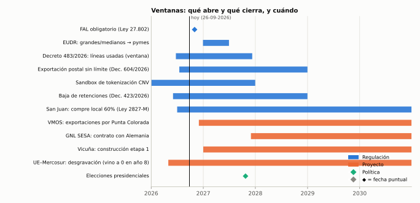
Lectura: el período octubre 2026 – octubre 2027 concentra aperturas (fondo laboral, VMOS, EUDR, compre local sanjuanino) y también el principal riesgo de cierre (elecciones). Lo que dependa de normas recientes debe capturarse en esa ventana; lo que dependa de proyectos de energía y minería tiene horizonte hasta 2030.
Decenas de señales fechadas (radar) → como máximo diez fichas en estudio → como máximo tres validaciones simultáneas con experimentos de menos de USD 500 y seis semanas → unidades que reciben capital por tramos liberados por hitos. Las ideas que no pasan quedan en un cementerio con la razón y la condición que las revive.
Para pasar a validación, una ficha debe demostrar: (1) problema pagado hoy; (2) un canal para los primeros 10 clientes con costo acotado; (3) economía unitaria positiva en el caso base; (4) un experimento barato; (5) downside acotado; (6) legalidad y ética.
| Dimensión | Peso | Qué mide |
|---|---|---|
| Dolor y disposición a pagar | 15 | ¿Es caro, frecuente u obligatorio? ¿Ya pagan? |
| Economía unitaria | 15 | Margen, LTV/CAC, payback |
| Distribución | 15 | ¿Llegamos a los clientes a costo razonable? |
| Defensibilidad | 10 | ¿Qué impide que nos copien en 6 meses? |
| Ajuste con el fundador | 10 | CABA, logística, horas, red |
| Palanca IA | 10 | % del trabajo ejecutable por IA |
| Ventana | 5 | ¿Algo lo vuelve posible ahora? |
| Opcionalidad | 5 | ¿Abre otros productos o mercados? |
| Sinergias | 5 | ¿Aporta canal, datos o infraestructura a otras unidades? |
| Velocidad de aprendizaje | 5 | ¿Cuánto tardamos en saber si funciona? |
| Robustez | 5 | ¿Sobrevive a un giro político o macro? |
Para comparar cosas heterogéneas —un servicio, una intermediación, una adquisición, un bono, un inmueble— cada ficha declara tres escenarios al mes 36 (fracaso, base, expansivo) con probabilidades y flujo mensual, y un múltiplo terminal. El IVR es el valor neto esperado (caja acumulada + valor terminal − capital) dividido por el recurso (capital óptimo + horas del fundador valorizadas a USD 10 la hora). La tesorería en dólares rinde un IVR de ~0,1 y marca el piso; a las unidades operativas se les exige IVR ≥ 1. No es "la verdad": es una disciplina para explicitar supuestos y compararlos con la misma vara.
| Función | La IA hace (con supervisión) | El fundador hace |
|---|---|---|
| Investigación y estrategia | Radar semanal, due diligence, modelos, informes, tesis | Juicio final, conversaciones con clientes |
| Software | Apps, automatizaciones, simuladores, tableros, integraciones (ARCA, WhatsApp) | Priorizar y probar con usuarios |
| Marketing | Posicionamiento, copys, landings, campañas listas para cargar, análisis | Aprobar y pagar la pauta |
| Ventas | Prospectos, secuencias, primera respuesta 24/7, calificación, propuestas | Cierre, reuniones, relaciones |
| Back-office | Liquidaciones, conciliaciones, OCR, recordatorios, reportes | Excepciones y emergencias |
| Trámites | Checklists, formularios pre-llenados, seguimiento | Firmar y presentar con su clave fiscal |
| Finanzas | Libro de capital, flujo de caja, alertas, memos de inversión | Mover el dinero (siempre humano) |
Límites: la IA no firma, no se presenta físicamente, no mueve dinero de forma autónoma, no envía mensajes masivos no solicitados (WhatsApp exige opt-in), se identifica como asistente y todo lo que toca impuestos o contratos lleva verificación.
Sí, con una regla: Max 5x (USD 100/mes) se paga si ahorra diez horas por mes a una tarifa sombra de USD 10; en esta etapa el ahorro esperado es muy superior (investigación, código, contenido, modelos). Max 20x (USD 200/mes) solo durante sprints de construcción de una unidad ya validada. Los agentes en producción se presupuestan como costo variable por cliente. La revisión mensual compara costo de IA contra horas ahorradas e ingresos habilitados; si el ratio empeora dos meses seguidos, se baja de plan.
De más de cuarenta señales y cerca de treinta ideas evaluadas, quedaron once fichas (cinco para validar ya, tres en exploración o espera, una de inversión y dos en radar con disparador) y diecisiete ideas descartadas con su razón.
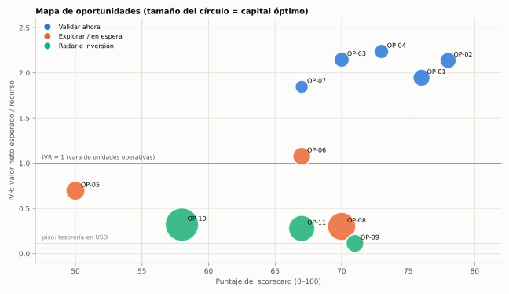
| ID | Oportunidad | Estado | Rol | Puntaje | IVR | Flujo esperado m36 (USD/mes) | Capital óptimo (USD) | h/sem | IA % |
|---|---|---|---|---|---|---|---|---|---|
| OP‑04 | Laboratorio de decisiones logísticas (simulación como servicio) | validar | plataforma | 73 | 2.24 | 1.074 | 1.200 | 8 | 70 |
| OP‑03 | Puente de maquinaria usada Europa → pymes argentinas | validar | motor de caja | 70 | 2.14 | 1.064 | 1.500 | 8 | 55 |
| OP‑02 | Oficina virtual con IA para transportistas pyme | validar | motor de caja | 78 | 2.14 | 960 | 2.000 | 10 | 70 |
| OP‑01 | Administración de consorcios aumentada por IA (CABA) | validar | motor de caja | 76 | 1.95 | 1.170 | 2.500 | 12 | 65 |
| OP‑07 | Motor de inteligencia + medio vertical (comex, logística, pymes) | validar | canal | 67 | 1.85 | 468 | 800 | 4 | 85 |
| OP‑06 | Puente de compre local minero (San Juan) para proveedores de afuera | explorar | opcion | 67 | 1.08 | 710 | 3.000 | 8 | 50 |
| OP‑05 | Marca matera: evaluación de la idea original y versión exportable premium | explorar | opcion | 50 | 0.70 | 475 | 4.000 | 8 | 55 |
| OP‑08 | Micro-adquisiciones de negocios digitales en USD operados con IA | explorar | cobertura | 70 | 0.30 | 475 | 20.000 | 6 | 70 |
| OP‑09 | Tesorería en USD + tesis satélite: Argentina exportadora de energía en un mundo sin Ormuz | inversion | cobertura | 71 | 0.11 | 17 | 3.000 | 1 | 60 |
| OP‑10 | Nodo energético del Golfo San Matías (Las Grutas / San Antonio / Sierra Grande) | radar | activo de renta | 58 | 0.32 | 332 | 40.000 | 2 | 40 |
| OP‑11 | Energía distribuida como activo de renta (solar + baterías en consorcios y comercios de AMBA) | radar | activo de renta | 67 | 0.28 | 270 | 15.000 | 2 | 40 |
Cómo leer el mapa. Arriba a la derecha está lo que combina calidad (puntaje) con valor por recurso (IVR). Aparece un grupo de cuatro oportunidades con IVR ~2 (OP-01, OP-02, OP-03, OP-04) que comparten rasgos: capital mínimo, aprendizaje en semanas, fuerte palanca IA y ajuste con el fundador. Su diferencia está en el tipo de riesgo: OP-01 depende de la velocidad de distribución; OP-02, de la disposición a pagar; OP-03, de una norma reversible; OP-04, de vender servicios profesionales. OP-07 tiene menos economía propia pero alimenta a todas. Abajo quedan los activos intensivos en capital (OP-08, OP-10, OP-11) y la tesorería (OP-09): no compiten con las unidades de servicio en el año 1; cumplen otros roles (cobertura, renta) y entran en la fase 2 con la caja que generen las unidades.
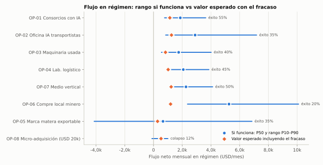
Rango si funciona vs valor esperado. La línea azul muestra el flujo mensual en régimen si la unidad logra tracción (P10 a P90; el punto es la mediana). El rombo naranja es el valor esperado incluyendo la probabilidad de fracaso. Dos lecturas: OP-06 (compre local minero) tiene el rango más alto pero la menor probabilidad de tracción desde CABA; OP-05 (marca matera exportable) es la única con una parte relevante del rango en pérdida aun si "funciona".
Cada dossier resume la ficha completa (oportunidades/OP-XX-*.md), que contiene además la evidencia línea por línea, el
pre-mortem y el plan detallado.
Tesis. En CABA hay más de 122.000 consorcios y más de 1,6 millones de unidades funcionales (IGJ) que pagan todos los meses un honorario de administración (CAPHAI, jun-2026: $50–120 mil para edificios de 6–20 unidades; $120–200 mil para 20–50; $200–400 mil para los grandes). Los atienden miles de administradores chicos, mayormente analógicos, con nuevas obligaciones (Disp. 1129/2026) y denuncias en aumento. Con IA se puede administrar al mismo precio con la mitad del costo de servir y mucha más transparencia. ESTIMACIÓN: pool de honorarios de CABA ≈ USD 60–140 millones por año.
Por qué ahora. Costo de IA en mínimos; presión regulatoria; administradores que se retiran sin sucesión; y el modelo de "comprar servicios y recablearlos con IA" que General Catalyst aplica en EE.UU. a administradores de propiedades.
La oferta. Administración completa con tres diferenciales verificables: cada gasto con comprobante en línea y explicación simple; respuesta 24/7 por WhatsApp (asistente identificado + escalamiento humano); ahorro medible por renegociación de proveedores con datos de otros edificios. Cuña paralela mientras se obtiene la matrícula del Registro de Administradores (curso ≥ 40 h, ~3 meses, ~USD 65): vender el back-office (liquidación, OCR, comunicación) a administradores existentes por USD 10–20 por edificio.
Economía. Si funciona, en régimen al mes 30: caso base 25 edificios a ~USD 80 → margen operativo ≈ USD 1.400/mes (~61%); P10/P50/P90 = USD 770 / 1.870 / 3.640. Contribución por edificio ≈ USD 62/mes; con un costo de adquisición de ~USD 300, payback ≈ 5 meses. Probabilidad de superar USD 1.000/mes: 83% si funciona, 46% incluyendo el fracaso (55% de tracción supuesta).
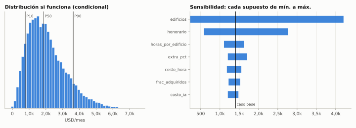
Qué validar primero (tornado): cuántos edificios se consiguen y a qué honorario. La IA asegura el margen; no trae edificios.
| Tramo | USD | Hito que lo libera |
|---|---|---|
| Mínimo | 300 | Curso, landing, auditor de expensas, USD 100 de pauta |
| Óptimo | 2.500 | ≥ 10 auditorías solicitadas y ≥ 2 asambleas conseguidas |
| Acelerado | 20.000 | 5 edificios propios con < 3 h/edificio: comprar una cartera de 10–20 con pago diferido |
| Máximo razonable | 60.000 | Retención post-compra ≥ 85% |
Distribución. Imán de valor hecho por IA: "subí tu liquidación de expensas y en 48 horas te decimos si hay gastos anómalos"; pauta hiperlocal (3–4 barrios, densidad); red y referidos; desarrolladoras (designan al primer administrador de edificios nuevos); compra de carteras. Defensa: densidad local, cambio de administrador requiere asamblea, datos de benchmark, reputación. Riesgos: lentitud de asambleas; tiempo del fundador (asambleas nocturnas, emergencias); errores de liquidación; responsabilidad sobre fondos de terceros; retención de carteras compradas. Veredicto: validar ya. Es el candidato más sólido a primer motor de caja y el más robusto a 2027, con plataforma detrás (compras agregadas, seguros, solar en terrazas, estudios contables).
Tesis. El pequeño transportista (1–20 camiones) pierde plata por administración: viajes mal cobrados, facturas atrasadas (cobros a 60–90 días), vencimientos (RUTA, VTV, seguros), retornos vacíos y ninguna idea de cuánto gana cada camión. Una oficina que funciona por WhatsApp —el transportista manda audios y fotos; la IA registra, factura, persigue cobranzas y avisa— resuelve eso por menos que un administrativo part-time.
Evidencia. 87% del sector sin sistemas; 37% de camiones vacíos; 4,2% usa IA (IDT 2026). ~416.000 camiones y tractores con antigüedad promedio de 20 años; programas oficiales para transportistas de ≤ 5 unidades. Factura de Crédito Electrónica obligatoria desde $5,5 M hacia grandes empresas. Por qué no software: Avancargo lleva ~8 años digitalizando y el sector sigue analógico: el transportista adopta un servicio que le resuelve, no una herramienta que tiene que aprender.
Economía. Si funciona, al mes 24: base 25 clientes × 4 camiones × USD 25 → ≈ USD 1.600/mes; P10/P50/P90 = USD 850 / 2.900 / 7.200; LTV/CAC mediano ~9. Variable crítica: precio por camión (con USD 12–15 no justifica el esfuerzo; con ≥ USD 20 es un motor de caja con casi cero capital).
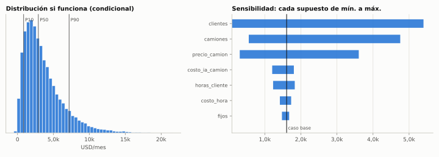
Validación (30 días, ~USD 150). 20 entrevistas + servicio "concierge" a 5 transportistas a USD 10/camión. Éxito: ≥ 3 de 5 lo usan ≥ 3 veces por semana y aceptan ≥ USD 20/camión. Detrás de la oportunidad: datos de costos reales por tramo (para OP-04), financiación de facturas (derivación con comisión), seguros de flota, retornos en alianza con plataformas de carga. Veredicto: validar en paralelo con OP-01. Máximo ajuste con el fundador.
Tesis. Las empresas no compran simuladores: compran respuestas a decisiones caras. ¿Cuántos camiones propios y cuántos tercerizados? ¿Cuántas dársenas y turnos? ¿Dónde va el depósito? ¿Tren o camión? La IA construye un modelo de simulación u optimización a medida en días; un fundador que conoce logística puede vender esas respuestas con margen alto y acumular una biblioteca de modelos reutilizables. Es la reformulación de la idea del fundador (ver capítulo 10).
Por qué ahora. Construir modelos con IA cuesta 5–10 veces menos; depósitos escasos y caros en AMBA (USD 7,2/m²/mes promedio, USD 14,5 en CABA, disponibilidad "prácticamente nula"); decisiones de millones en Vaca Muerta.
| Cliente | Decisión | Ticket estimado (HIPÓTESIS) |
|---|---|---|
| Distribuidora AMBA | Flota propia vs tercerizada, ruteo | USD 1.500–4.000 |
| Operador logístico / depósito | Dársenas, turnos, layout, picking | USD 2.000–6.000 |
| Industria que se reequipa (con OP-03) | Capacidad y layout de una línea | USD 1.500–5.000 |
| Acopio / puerto | Colas de camiones en cosecha | USD 3.000–10.000 |
| Servicios en Vaca Muerta | Transporte de personal, arena, agua | USD 5.000–15.000 |
Economía. Si funciona, al mes 18: base 1 estudio por trimestre + 1 modelo mantenido → ≈ USD 1.000/mes; P50 ≈ USD 2.070; el fundador factura ~USD 110 por hora propia en la mediana.
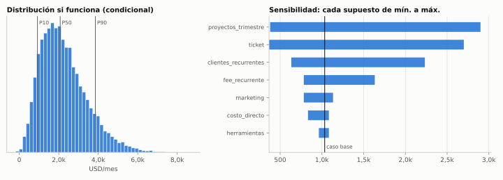
Validación. Construir una demo en días (dársenas de un depósito típico; flota de una distribuidora) y ofrecer un piloto de USD 500–1.500 a cinco contactos. Regla: tres estudios del mismo tipo antes de convertir algo en producto. Veredicto: validar vendiendo, no programando.
Tesis. Dos shocks opuestos crean un arbitraje: fábricas europeas que cierran (4.996 insolvencias en Alemania en el segundo trimestre, máximo desde 2005; agravado por el shock energético) y un decreto argentino que hace que las líneas de producción usadas paguen 25% del arancel y ninguna tasa de 2% + 3% (Decreto 483/2026, con requisito de compras nacionales bajado de 30% a 10% del FOB). Quien busca, verifica, trae y tramita cobra comisión sin poner capital.
La oferta. Relevamiento → búsqueda en subastas y dealers (la IA barre catálogos a diario) → tres opciones con costo puesto en planta (FOB + flete ~USD 3.500–8.500 por contenedor de 40' + seguro + arancel reducido + despachante + transporte + instalación) → inspección independiente obligatoria pagada por el cliente → proyecto de competitividad → seguimiento. Cobro: fee de gestión + comisión de éxito de 5–12%.
Economía. Si funciona, año 2: base 3 operaciones de ~USD 60.000 → ≈ USD 1.150/mes promedio; P50 ≈ USD 1.750; ingreso por operación ≈ USD 8.400.
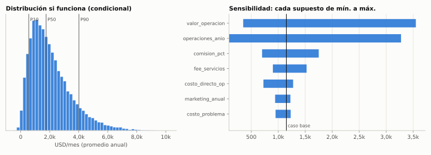
Riesgos. Reputacional (una máquina que no funciona cierra el canal) y político (el decreto puede revertirse en 2027). Veredicto: motor táctico con ventana; se activa ante el primer pedido real. Etapa 2 posible: dealer con servicio técnico (más defendible).
Tesis. El sistema necesita un radar permanente; publicarlo con criterio para un nicho que decide (comercio exterior, logística, pymes) crea audiencia propia, flujo de oportunidades y clientes para las demás unidades. Contra: los resúmenes genéricos del Boletín Oficial ya existen gratis (BOA) y la disposición a pagar por información es baja; por eso el producto no es "resumir" sino decir qué hacer, con números (costo puesto en planta, impacto en el flete, qué presentar y cuándo). La IA hace ~85% del trabajo. Validación: ocho ediciones semanales. Éxito: ≥ 300 suscriptores, ≥ 40% de apertura, ≥ 3 conversaciones comerciales derivadas. Veredicto: validar ya, con pocas horas, por su valor de canal.
La obligación legal (60% de compras en la provincia, multas de hasta 200.000 UT) coincide con la ola de Vicuña: el problema es excelente y la economía, si funciona, la más alta del mapa (mediana ~USD 5.250/mes con dos abonos y dos contratos por año). Pero desde CABA y sin red minera la probabilidad de tracción es baja (20%): se mantiene como opción con una edición "Proveedores RIGI" de OP-07 para medir interés y encontrar un socio sanjuanino; disparador: reglamentación de la ley + decisión de inversión de Vicuña.
Negocios digitales pequeños y rentables se venden a 2–4 veces el beneficio anual (Acquire.com, ene-2026). Operados con IA, una compra de ~USD 20.000 rinde en la mediana ~28% anual en dólares, con una cola de colapso (fraude, cambio de plataforma). Rol: cobertura contra el riesgo Argentina desde 2027. Primer paso sin costo: practicar due diligence con Claude sobre listados reales y resolver la estructura legal e impositiva.
Mientras el capital espera destino, rinde en ON corporativas en dólares (~7,0–7,9%: YPF 2031, Pampa 2037, Telecom 2033, TGS 2031, Pluspetrol 2031), diversificadas y con cobertura global. Tesis satélite: productores y transportistas de Vaca Muerta con Brent muy por encima de sus supuestos de guía (Vista Energy guía USD 3.000 M de EBITDA con Brent a USD 65 y ±USD 200 M por cada ±USD 10 en el segundo semestre). Qué la mata: reapertura de Ormuz, crisis de 2027, cuellos logísticos, precio local desacoplado. Tamaño máximo 10% del patrimonio, reglas de salida escritas antes de entrar. No es asesoramiento financiero regulado.
El fundador aportó dos ideas como ejemplos del tipo de iniciativa que le interesa. Se evaluaron con el mismo rigor que cualquier otra: destruir lo que no tiene economía y rescatar lo que sí.
"Los primeros 6 meses precio regalado, hasta tener una fuerte entrada en mercado, sacrificar ganancias e incluso invertir. Luego, con cartera de clientes, escalar usando la marca, diversificar, local en algún shopping y combinar con importaciones."
Simulación (herramientas/modelos/op05b-penetracion-mercadolibre.yaml, 20.000 iteraciones):
| Resultado | Valor |
|---|---|
| Costo de la campaña (P10 / P50 / P90) | USD 9.700 / 19.900 / 35.900 (1 a 7 años del aporte mensual) |
| Valor neto a 24 meses, caso base | −USD 3.060 |
| Valor neto P10 / P50 / P90 | −USD 14.500 / +1.150 / +21.200 |
| Probabilidad de perder plata | 46% |
| Supuesto dominante | Las ventas orgánicas extra que deja el ranking ganado (amplitud ~USD 32.000), no la recompra |
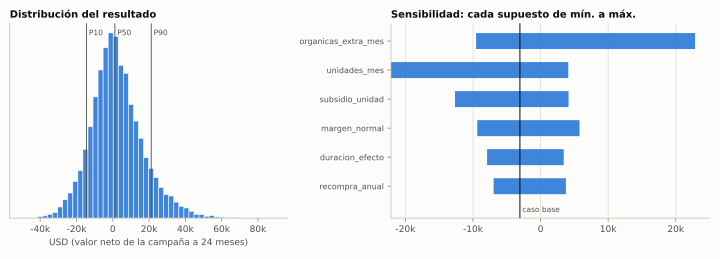
Por qué no funciona como está planteada.
Lo que se rescata. La intuición de una marca con identidad argentina tiene un canal con demanda comprobada afuera: la yerba
exportó un récord en 2025 y marcas argentinas venden kits de mate en Amazon EE.UU. La simulación de la versión exportable
(op05-marca-matera-exportable.yaml) muestra que solo funciona en el segmento premium (precio ≥ USD 50, costo del kit ≤ USD 17 y
publicidad ≤ 15% de las ventas), con contribución mediana de ~USD 2 por kit y ~USD 39.000 de capital de trabajo en régimen. Por
eso queda en espera (OP-05), con una prueba de 100 kits si el fundador la quiere priorizar.
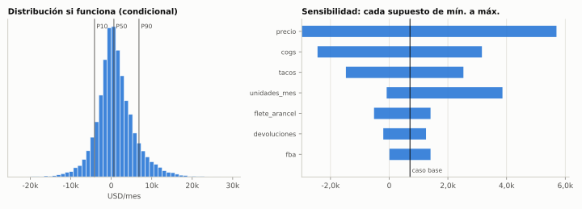
| Aspecto | Evaluación |
|---|---|
| Costo | USD 300–600 por tres meses: barato; no es el riesgo |
| Riesgo real | Construir tres meses sin cliente. El software de simulación genérico compite con AnyLogic, FlexSim (~USD 6.000/año), Arena y Simio, pensados para empresas grandes con analistas; las pymes no tienen quién los use |
| Qué vale | El conocimiento logístico del fundador y la capacidad de la IA de construir modelos a medida en días |
| Reformulación | OP-04: vender primero decisiones (estudios de USD 1.500–10.000), acumular modelos reutilizables y convertir en producto solo lo que se repita tres veces |
| Veredicto | Sí a Claude Max desde el día uno —para esto y para todo lo demás—, pero cada línea de código debe responder a un cliente que paga |
Las dos ideas tienen algo en común: empiezan por la solución (una marca con precio bajo, una app). El método de este sistema empieza por el problema pagado y por la hipótesis más riesgosa, y la prueba con el experimento más barato posible. Con ese filtro, la idea 2 se convirtió en una de las mejores oportunidades del mapa; la idea 1 quedó como una opción chica.
Decir que no es una capacidad central del sistema. Estas ideas se estudiaron y se descartaron (por ahora). Cada una tiene la
condición que la revive; el registro vivo está en oportunidades/descartadas.md.
| Idea | Por qué no | Qué la revive |
|---|---|---|
| App de QR para propinas | Replica lo que Mercado Pago ya hace gratis | Un problema adyacente real sin resolver |
| Resumen del Boletín Oficial con IA | Ya existe gratis (BOA) y los estudios publican alertas | Reformulada en OP-07 (inteligencia accionable de nicho) |
| Chatbot genérico de WhatsApp para pymes | Mercado saturado, sin defensa | Solo como componente de un servicio vertical |
| Sitios de contenido con publicidad | Las respuestas de IA de los buscadores reducen clics; CPM argentino bajo | Contenido como canal, no como negocio |
| Plataforma de exportación paquete por paquete | Fin del de minimis en EE.UU. y €3 por artículo en la UE | Operador de despacho con derechos pagos y volumen |
| Contratista de pulverización con drones | De < 500 a ~3.000 drones en dos años; USD 42.000 por equipo; presencia rural | Ecosistema (servicio técnico, baterías) con socio |
| Referidor del Fondo de Asistencia Laboral | Costo tope 1% anual: comisión de decenas de dólares por pyme al año | Herramienta para contadores si la gestión duele |
| Reventa de importados en Mercado Libre | Márgenes que se comprimen para todos con Temu, Shein y Amazon Bazaar | Nicho B2B con servicio o marca con diferencial |
| Instalador solar residencial | Mano de obra intensiva y competida; repago de 5–8 años | Rol de propietario-financista (OP-11) |
| Turismo receptivo | Argentina cara en dólares | Depreciación real fuerte |
| Precio regalado 6 meses en mates (idea del fundador) | Costo mediano ~USD 20.000, valor base negativo | Prueba acotada de ranking o versión premium exportable |
| Software genérico de simulación (idea del fundador) | Compite con software enterprise; construir sin cliente | Reformulada en OP-04 |
| Vino directo al consumidor en EE.UU. | Sistema de tres niveles y licencias por estado | Acuerdo con importador |
| Newsletter en inglés para inversores extranjeros | IED débil, competencia, baja disposición a pagar | Edición en inglés de OP-07 con demanda probada |
| Billetera o fintech de pagos | 89 billeteras interoperables, licencia y capital | Open Finance con estándares publicados |
| Operar alojamiento en Vaca Muerta desde CABA | Presencia diaria y capital; operadores instalados | Coinversión con operador local |
| Local propio en shopping para una marca nueva | Costo fijo antes de la demanda | Marca con ventas online estables |
Estas tesis no reciben capital hoy, pero el sistema las vigila con disparadores concretos. Cuando uno se activa, la tesis vuelve al
comité (radar/vigilancia.md).
| Tesis | Por qué importa | Disparador |
|---|---|---|
| Nodo Golfo San Matías (OP-10) | VMOS + GNL + Argentina LNG: el próximo polo energético | Exportaciones de VMOS, decisión de inversión de Argentina LNG o alquileres +30% i.a. |
| Alojamiento corporativo en Vaca Muerta | Déficit de camas, rentas de 10–15% en USD | Socio operador en Neuquén y capital ≥ USD 30.000 |
| Energía distribuida como renta (OP-11) | Tarifas sin subsidio, cortes, equipos baratos | 15 edificios administrados o USD 10.000 de caja |
| Ecosistema de drones agrícolas | Parque ×6 en dos años; faltan servicio técnico y baterías | Socio en zona agrícola o reparaciones > 3 semanas |
| Trazabilidad EUDR | Exportadores de carne, cuero, soja y madera obligados desde dic-2026 / jun-2027 | Rechazos de embarques o pymes buscando proveedores |
| Herramienta FAL para contadores | 1-11-2026: todos los empleadores con un fondo nuevo | Reclamos masivos por la gestión |
| Efectos de segundo orden del GLP-1 | Semaglutida genérica en la región | Precio < 50% del original y adopción visible |
| Autos electrificados | 50.000 por año con arancel cero | Parque > 100.000 o quejas de valuación de usados |
| Eficiencia de fertilización | Urea +75%; biológicos +10–15% anual | Urea > USD 700/t sostenida 6 meses |
| Roll-up de estudios contables | El caso Thrive/Current aplicado a Argentina | Socio contador o matrícula del fundador |
| Stargate Argentina | USD 25.000 M en Patagonia | Contratos vinculantes o presentación al RIGI |
| Riesgo 2027 | Reversión de normas recientes | Riesgo país > 800 pb o giro regulatorio claro en encuestas |
No se trata de copiar, sino de entender qué vieron, cómo entraron, cómo monetizaron, qué ventaja crearon y por qué costó copiarlas.
Registro completo en casos/patrones.md.
| Caso | Qué vieron | Patrón | Qué aplicamos |
|---|---|---|---|
| MercadoLibre (1999) | El modelo de eBay funcionando en EE.UU. antes de que llegara a la región | Arbitraje geográfico de modelos + apilar capas (pagos, logística) sobre un canal propio | Traer modelos que funcionan afuera y no llegaron (roll-ups de servicios con IA) y apilar servicios sobre la base de clientes (consorcios → compras → seguros → energía) |
| Thrive Holdings / Current y General Catalyst (2025–2026) | Servicios con márgenes limitados por mano de obra, dueños mayores y clientes fieles | Comprar a múltiplos de servicios, recablear con IA, re-valuar | Versión micro en CABA: ganar edificios uno a uno y comprar carteras con pago diferido (OP-01); luego estudios contables con socio |
| Lumilagro vs Stanley | Stanley entró en 2015 con precio alto y un pico adaptado al mate; Lumilagro respondió con fabricación local + importación propia de China, marcas premium más baratas y locales propios | En bienes durables y de identidad gana la marca y la distribución, no el precio de lanzamiento | Descartar el precio regalado; si hay marca, premium y en un canal con demanda probada (OP-05) |
| Balibetov | Cultura del mate + Amazon EE.UU. | Producto cultural modernizado en un canal global | Prueba de canal para OP-05; advierte que la categoría ya está competida |
| Avancargo | Camiones vacíos y cargas sin transporte (desde 2018) | Digitalizar el transporte es lento: el sector sigue analógico tras ocho años | Vender servicio hecho por nosotros, no software; aliarse con plataformas de carga (OP-02) |
| Vaca Muerta Services (NLK Capital) | El boom de Añelo generó una demanda de camas que la ciudad no podía absorber | Segundo orden de un boom extractivo: vivienda, logística, servicios | Buscar el mismo patrón antes de que sea obvio: Golfo San Matías (OP-10) |
| Italia Maquinarias | Equipos agrícolas usados importados y reacondicionados | Importar–reacondicionar–vender | Etapa 2 de OP-03 (dealer con servicio técnico) |
| Search funds en México y España | Pymes rentables sin sucesión | Un emprendedor compra y dirige la pyme del fundador que se retira | Compras de carteras y, más adelante, pymes completas con financiación del vendedor |
| Fase | Período | Objetivo | Métrica de salida |
|---|---|---|---|
| 0. Aprender barato | oct–dic 2026 | Tres validaciones en paralelo; sistema y tesorería funcionando | ≥ 1 experimento con señal fuerte de pago |
| 1. Primer motor de caja | ene–jun 2027 | Escalar 1–2 ganadores; matar el resto | ≥ USD 500–1.000/mes de flujo neto |
| 2. Plataforma y reinversión | jul-2027 → 2028 | Back-office compartido; primera cartera comprada; primer activo en USD y primer activo de renta | USD 2.000–4.000/mes; ≥ 1 activo en USD |
| 3. Compounding | 2029–2031 | Roll-up, producto vertical, activos reales, capital de terceros | Flujo independiente del aporte del fundador |
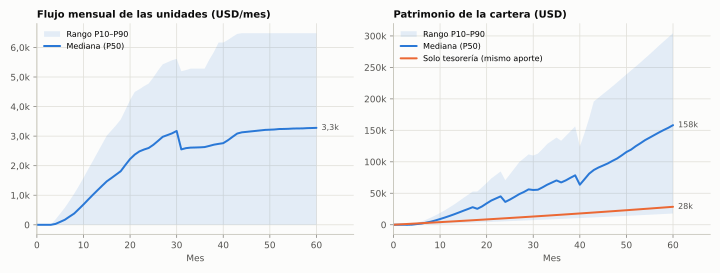
| Métrica (USD) | Base P10 | Base P50 | Base P90 | Estrés P50 | Solo tesorería |
|---|---|---|---|---|---|
| Flujo mensual de unidades, mes 12 | 0 | 1.011 | 2.154 | 475 | — |
| Flujo mensual de unidades, mes 24 | 0 | 2.599 | 4.781 | 1.190 | — |
| Flujo mensual de unidades, mes 60 | 0 | 3.280 | 6.484 | 1.411 | — |
| Patrimonio, mes 24 | 5.400 | 36.234 | 70.749 | 20.583 | 10.251 |
| Patrimonio, mes 60 | 17.760 | 158.193 | 304.365 | 47.841 | 28.478 |
| Probabilidad de superar a solo tesorería al mes 60 | — | 79% | — | 60% | — |
Supuestos principales (cartera/proyeccion.yaml): aporte de USD 400/mes; herramientas USD 120/mes; tesorería al 7% anual;
reinversión del 90% del flujo; como máximo dos unidades escaladas a la vez (capacidad del fundador); 15% de probabilidad de que
el fundador no pueda dedicar las horas (todas las unidades fallan); un factor de ejecución común a todas las unidades; y compras
(cartera de edificios, micro-adquisición, solar, inmueble) que solo se ejecutan si hay caja y si la unidad que las justifica funcionó.
Lectura. La estrategia es asimétrica: en el peor decil, se termina con algo menos que ahorrando en tesorería (el costo de intentar); en la mediana, con varias veces más. La variable decisiva es que al menos una unidad de servicio funcione en el primer año; por eso se validan tres a la vez, baratas y rápidas. Las probabilidades son juicios iniciales y se reemplazan por datos reales en cada comité. El escalón del mes 30 en el flujo refleja el cierre supuesto de la ventana de OP-03 (maquinaria usada) tras las elecciones de 2027.
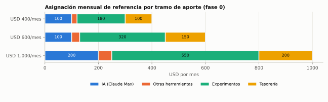
Con USD 400 por mes el límite son las horas del fundador, no el dinero. Pasar a USD 600 compra un experimento más en paralelo o más pauta sobre un canal que funcione; USD 1.000 acelera uno o dos meses la primera caja. Subir de tramo solo con un canal probado.
| Semanas | Fundador (≈ 12–14 h/semana) | Claude |
|---|---|---|
| 1–2 | Responder las 12 preguntas del perfil. Inscribirse al curso de administrador (RPA). Abrir cuenta de inversión y definir la tesorería. Listar 20 transportistas y 10 contactos logísticos. | Construir el auditor de expensas y su landing; guiones de entrevistas (transportistas, consejos de propietarios, administradores); demo de simulación (dársenas o flota); primera edición del medio; rutina semanal de radar. |
| 3–4 | 10 entrevistas a transportistas; 3 conversaciones con administradores mayores; ofrecer el estudio piloto a 5 contactos; aprobar y cargar USD 100–150 de pauta de auditorías. | Campañas listas para cargar; síntesis de entrevistas; ajustar la demo según feedback; ediciones 2–3; tablero de precios del Golfo San Matías (OP-10). |
| 5–8 | Iniciar el concierge con 5 transportistas (WhatsApp); llamadas con cada auditoría entregada; primera propuesta en asamblea; entregar el estudio piloto si se vendió. | Procesar audios, fotos y documentos del concierge; reportes semanales de rentabilidad por camión; informes de auditoría; modelo del estudio piloto; ediciones 4–7. |
| 9–12 | Medir: horas por cliente, disposición a pagar, conversiones. Pedir precio real a los transportistas. Presentar la decisión en el comité de fin de diciembre. | Informe de cada experimento contra sus umbrales; recalibrar fichas y modelos con datos reales; proyección de cartera actualizada; propuesta de asignación para el primer trimestre de 2027. |
| Experimento | Éxito | Muerte |
|---|---|---|
| EXP-01 Consorcios | ≥ 10 auditorías y ≥ 2 asambleas con ≤ USD 150 de pauta | ≤ 3 auditorías |
| EXP-02 Transportistas | ≥ 3 de 5 usan y aceptan ≥ USD 20/camión | ≤ 1 de 5 |
| EXP-04 Lab. logístico | 1 estudio vendido (≥ USD 500) y cliente satisfecho | 0 de 5 con interés real |
| EXP-06 Medio vertical | ≥ 300 suscriptores, ≥ 40% de apertura, ≥ 3 conversaciones comerciales | < 100 suscriptores y 0 conversaciones |
| EXP-03 Maquinaria | El cliente pide inspección o paga el fee de búsqueda | Diferencial puesto en planta < 25% |
/radar todos los lunes y deja el resultado en el repositorio./revision + /comite a fin de mes con propuesta de asignación.| # | Pregunta | Qué cambia |
|---|---|---|
| 1 | ¿Cuántas horas por semana y en qué franjas? ¿Tenés empleo en relación de dependencia? | < 8 h → priorizar OP-07 y OP-04; ≥ 15 h → OP-01 u OP-02 como motor |
| 2 | ¿Qué parte de la logística conocés y con qué empresas o personas tenés relación? | Transporte → OP-02; comercio exterior → OP-03; planificación → OP-04 |
| 3 | ¿Tenés título o matrícula (contador, abogado, ingeniero, despachante, productor de seguros)? | Habilita el roll-up contable o seguros |
| 4 | ¿Cuántos ahorros podrías movilizar si una oportunidad se valida? ¿Cuánto podrías perder sin afectar tu vida? | Adelanta compras de carteras o micro-adquisiciones |
| 5 | ¿Nivel de inglés? | Subastas europeas, clientes y vendedores en EE.UU. |
| 6 | ¿Programás, aunque sea un poco? | Velocidad de colaboración con Claude Code (no es requisito) |
| 7 | ¿Te sentís cómodo vendiendo (llamadas, reuniones, asambleas, cámaras)? | Inbound y marketplaces vs venta directa |
| 8 | ¿Tenés contactos en pymes industriales, transportistas, inmobiliarias, desarrolladoras o administradores? | Orden de los experimentos |
| 9 | ¿Estructura legal y bancaria (monotributo/RI, SAS, cuenta en USD, cuenta en el exterior)? | Cobros en USD y activos afuera |
| 10 | ¿Qué no harías nunca y qué te encantaría hacer? | Descarta o prioriza unidades |
| 11 | ¿Necesitás ingresos pronto o priorizás patrimonio? | Mezcla motor de caja vs opciones |
| 12 | ¿Podés viajar a San Juan, Neuquén o Río Negro una o dos veces por trimestre? | Habilita OP-06 y los activos en polos energéticos |
Este informe es la primera salida de un sistema que vive en el repositorio y trabaja con el fundador de forma continua.
| Componente | Qué hace | Dónde |
|---|---|---|
| Doctrina | Principios, marco de evaluación, estándares de evidencia, asignación de capital, lentes de descubrimiento, palanca IA, distribución, riesgo | doctrina/ |
| Radar | Contexto macro fechado, registro de señales, mapa regulatorio, disparadores de vigilancia, fuentes | radar/ |
| Fichas | Una por oportunidad, con frontmatter que alimenta el tablero | oportunidades/ |
| Modelos | Monte Carlo + sensibilidad por oportunidad; proyección de cartera | herramientas/ |
| Cartera | Estrategia, estado, libro de capital, decisiones, experimentos | cartera/ |
| Memoria | Bitácoras de investigación con hechos fechados y fuentes; casos y patrones | conocimiento/, casos/ |
| Equipo | Nueve agentes especializados: explorador, analista regulatorio, analista de mercado, CFO, growth, abogado del diablo, analista de inversiones, constructor, asignador | .claude/agents/ |
| Rutinas | /radar, /oportunidad, /evaluar, /matar, /experimento, /comite, /revision, /tesis-inversion, /informe |
.claude/skills/ |
/radar (señales, normas, disparadores; edición del medio vertical)./oportunidad (triage de 30 minutos: ficha o cementerio)./evaluar + /matar + /experimento./revision (libro de capital, métricas, costo de IA) y /comite (asignación de capital y horas)./informe (nueva versión de este documento).Consultadas entre el 26-09-2026 y la fecha de cierre, mayormente a través de resultados de búsqueda (ver "Cómo leer este informe").
Se indica el medio o la institución y, cuando está disponible, la fecha de publicación. Detalle línea por línea en
conocimiento/2026-09-26-investigacion-fundacional.md.
Macro y mercados (Argentina)
Global
Regulación argentina
Comercio exterior
Energía, minería y territorio
Sectores y empresas
Costos de la palanca IA
Cada modelo vive en herramientas/modelos/ y se corre con python3 herramientas/escenarios.py. Las distribuciones son
triangulares (mínimo, más probable, máximo) salvo indicación; "Éxito" es la probabilidad de tracción supuesta.
Salida: margen_operativo (USD/mes) · Éxito supuesto: 55%. Caso base: 1.405; si funciona P10 / P50 / P90: 772 / 1.867 / 3.636.
| Supuesto | Mín. | Más probable | Máx. | Descripción |
|---|---|---|---|---|
| edificios | 6 | 25 | 70 | HIPÓTESIS: edificios administrados al mes 30 (orgánico ~1/mes desde el mes 6 + eventual compra de cartera) |
| honorario | 50 | 80 | 130 | HECHO→ESTIMACIÓN: honorario CAPHAI jun-2026 $50–400k/mes según tamaño; mix medio ≈ $120k ≈ USD 80 |
| extra_pct | 0.05 | 0.15 | 0.3 | ESTIMACIÓN: ingresos extra (liquidación de sueldos del encargado, certificados, gestiones) como % del honorario |
| costo_ia | 4 | 7 | 15 | ESTIMACIÓN: API + WhatsApp + software + hosting por edificio y mes |
| horas_por_edificio | 1.5 | 3 | 5 | HIPÓTESIS: horas humanas por edificio/mes con IA (asambleas, emergencias, supervisión). Tradicional ≈ 8–12 |
| costo_hora | 4 | 6 | 9 | ESTIMACIÓN: costo de una hora de asistente operativo (USD) |
| frac_adquiridos | 0 | 0.2 | 0.5 | HIPÓTESIS: fracción de edificios que vino de comprar carteras |
| earnout_pct | 0.2 | 0.3 | 0.4 | HIPÓTESIS: % del honorario que se paga al vendedor durante el earn-out |
| fijos | 80 | 150 | 300 | ESTIMACIÓN: fijos (contador, renovación RPA, seguros, cuenta bancaria, dominio) |
| nuevos_mes | 0.5 | 1.5 | 4 | HIPÓTESIS: edificios nuevos por mes en régimen |
| cac | 100 | 300 | 900 | HIPÓTESIS: costo de adquirir un edificio (pauta + auditorías gratuitas + horas) |
Salida: margen_operativo (USD/mes) · Éxito supuesto: 35%. Caso base: 1.605; si funciona P10 / P50 / P90: 848 / 2.896 / 7.177.
| Supuesto | Mín. | Más probable | Máx. | Descripción |
|---|---|---|---|---|
| clientes | 3 | 25 | 80 | HIPÓTESIS: empresas de transporte (1–20 camiones) activas al mes 24 |
| camiones | 2 | 4 | 10 | HIPÓTESIS: camiones promedio por cliente (programas oficiales apuntan a ≤5) |
| precio_camion | 12 | 25 | 45 | HIPÓTESIS CRÍTICA: USD por camión/mes (un administrativo part-time cuesta USD 400–800/mes) |
| costo_ia_camion | 2 | 4 | 8 | ESTIMACIÓN: API + WhatsApp + integraciones por camión/mes |
| horas_cliente | 1 | 2.5 | 5 | HIPÓTESIS: horas humanas por cliente/mes (excepciones, carga inicial, llamadas) |
| costo_hora | 4 | 6 | 9 | ESTIMACIÓN: hora de asistente operativo |
| fijos | 50 | 120 | 250 | ESTIMACIÓN: fijos (software, contador, dominio) |
| churn | 0.02 | 0.04 | 0.08 | HIPÓTESIS: bajas mensuales |
| cac | 60 | 180 | 500 | HIPÓTESIS: costo de adquirir un cliente (pauta en grupos/Meta + demo + horas) |
| nuevos_mes | 1 | 3 | 7 | HIPÓTESIS: clientes nuevos por mes en régimen |
Salida: margen_mensual (USD/mes (promedio anual)) · Éxito supuesto: 40%. Caso base: 1.150; si funciona P10 / P50 / P90: 555 / 1.751 / 4.014.
| Supuesto | Mín. | Más probable | Máx. | Descripción |
|---|---|---|---|---|
| operaciones_anio | 0.5 | 3 | 8 | HIPÓTESIS: operaciones cerradas por año en régimen (año 2) |
| valor_operacion | 20000 | 60000 | 180000 | ESTIMACIÓN: valor FOB promedio de máquina/línea (USD) |
| comision_pct | 0.05 | 0.08 | 0.12 | HIPÓTESIS: comisión de éxito sobre FOB |
| fee_servicios | 500 | 1500 | 3000 | HIPÓTESIS: honorario fijo por gestión (búsqueda, proyecto Decreto 483/2026, coordinación logística) |
| costo_directo_op | 300 | 800 | 2500 | ESTIMACIÓN: costo propio por operación (traducciones, llamadas, eventual viaje; la inspección la paga el cliente) |
| prob_problema | 0.02 | 0.08 | 0.2 | HIPÓTESIS: probabilidad de que una operación salga mal (máquina no funciona, demora grave) |
| costo_problema | 1000 | 5000 | 15000 | HIPÓTESIS: costo esperado de un problema (devolver comisión, reclamo) |
| marketing_anual | 600 | 1500 | 4000 | ESTIMACIÓN: pauta a industriales + contenido + eventos |
Salida: margen (USD/mes) · Éxito supuesto: 45%. Caso base: 1.033; si funciona P10 / P50 / P90: 923 / 2.074 / 3.857.
| Supuesto | Mín. | Más probable | Máx. | Descripción |
|---|---|---|---|---|
| proyectos_trimestre | 0.3 | 1 | 3 | HIPÓTESIS: estudios vendidos por trimestre |
| ticket | 1000 | 3000 | 8000 | HIPÓTESIS: precio por estudio (dimensionamiento de flota, depósito, muelles, multimodal) |
| costo_directo | 50 | 200 | 800 | ESTIMACIÓN: datos, relevamiento, traslados por estudio |
| clientes_recurrentes | 0 | 1 | 4 | HIPÓTESIS: clientes que pagan mantenimiento del modelo/gemelo digital |
| fee_recurrente | 150 | 400 | 1000 | HIPÓTESIS: fee mensual por modelo mantenido |
| herramientas | 100 | 150 | 220 | ESTIMACIÓN: Claude Max 5x/20x + cómputo |
| marketing | 50 | 150 | 400 | ESTIMACIÓN: contenido técnico + LinkedIn + eventos |
| horas_por_proyecto | 15 | 35 | 80 | ESTIMACIÓN: horas del fundador por estudio (la IA construye el modelo) |
Salida: margen (USD/mes) · Éxito supuesto: 35%. Caso base: 709; si funciona P10 / P50 / P90: -4.131 / 661 / 6.854.
| Supuesto | Mín. | Más probable | Máx. | Descripción |
|---|---|---|---|---|
| unidades_mes | 60 | 350 | 1500 | HIPÓTESIS: kits vendidos por mes en régimen |
| precio | 35 | 52 | 75 | ESTIMACIÓN: precio de venta de un kit premium (calabaza/cuero + bombilla de alpaca + accesorios); Amazon muestra kits USD 25–60 |
| cogs | 10 | 17 | 26 | ESTIMACIÓN: costo del kit artesanal en Argentina + packaging (USD) |
| flete_arancel | 2.5 | 4.5 | 8 | ESTIMACIÓN: flete a granel a depósito FBA + arancel EE.UU. (efectivo promedio AR ~5,7%) |
| fba | 6 | 8 | 10 | ESTIMACIÓN: tarifa de fulfillment de Amazon por unidad |
| comision | — | 0.15 | — | HECHO (orden de magnitud): comisión de referencia de Amazon ~15% |
| tacos | 0.08 | 0.18 | 0.3 | HIPÓTESIS CRÍTICA: publicidad como % de ventas totales |
| devoluciones | 0.02 | 0.05 | 0.1 | ESTIMACIÓN: devoluciones y roturas como % de ventas |
| fijos | 100 | 250 | 500 | ESTIMACIÓN: software, almacenamiento, fotos, cuenta vendedor |
Salida: valor_neto (USD (valor neto de la campaña a 24 meses)). Caso base: -3.060; si funciona P10 / P50 / P90: -14.511 / 1.152 / 21.183.
| Supuesto | Mín. | Más probable | Máx. | Descripción |
|---|---|---|---|---|
| meses_campania | — | 6 | — | Propuesta del fundador |
| unidades_mes | 100 | 400 | 1200 | HIPÓTESIS: unidades vendidas por mes con precio regalado |
| subsidio_unidad | 3 | 6 | 10 | ESTIMACIÓN: descuento vs precio normal + margen negativo por unidad (USD) |
| clientes_por_unidad | — | 0.9 | — | ESTIMACIÓN: algunos compran más de una unidad |
| recompra_anual | 0.05 | 0.25 | 0.6 | HIPÓTESIS: compras por cliente y año a precio normal (bienes durables: un termo dura años) |
| margen_normal | 2 | 4.5 | 8 | ESTIMACIÓN: margen por unidad a precio normal tras comisión ML (~13–17%), envío, IVA/IIBB |
| organicas_extra_mes | 0 | 120 | 600 | HIPÓTESIS CRÍTICA: ventas orgánicas extra por mes gracias al ranking/reseñas ganados |
| duracion_efecto | 3 | 12 | 24 | HIPÓTESIS: meses que dura el efecto ranking frente a competidores que también bajan precio |
Salida: neto (USD/mes) · Éxito supuesto: 20%. Caso base: 2.550; si funciona P10 / P50 / P90: 2.368 / 5.256 / 10.100.
| Supuesto | Mín. | Más probable | Máx. | Descripción |
|---|---|---|---|---|
| clientes_retainer | 0 | 2 | 6 | HIPÓTESIS: proveedores extranjeros o de otras provincias con abono mensual |
| fee_retainer | 800 | 1500 | 3000 | HIPÓTESIS: abono mensual por inteligencia + representación + búsqueda de socio local |
| contratos_anio | 0 | 2 | 6 | HIPÓTESIS: contratos cerrados por año para clientes |
| valor_contrato | 100000 | 400000 | 2000000 | HIPÓTESIS: valor del primer año de cada contrato (USD) |
| success_fee | 0.015 | 0.03 | 0.05 | HIPÓTESIS: comisión de éxito sobre el primer año |
| socio_pct | 0.3 | 0.4 | 0.5 | HIPÓTESIS: participación del socio local en San Juan |
| viajes | 150 | 350 | 700 | ESTIMACIÓN: viajes CABA–San Juan prorrateados por mes |
| fijos | 50 | 100 | 200 | ESTIMACIÓN |
Salida: valor_total (USD/mes) · Éxito supuesto: 50%. Caso base: 965; si funciona P10 / P50 / P90: 1.114 / 2.262 / 4.117.
| Supuesto | Mín. | Más probable | Máx. | Descripción |
|---|---|---|---|---|
| suscriptores_pagos | 10 | 80 | 400 | HIPÓTESIS: suscriptores pagos del tier premium |
| precio | 5 | 10 | 20 | HIPÓTESIS: precio mensual del tier premium (USD) |
| sponsors | 0 | 0.5 | 3 | HIPÓTESIS: sponsors por mes (despachantes, forwarders, ALyC, software) |
| tarifa_sponsor | 100 | 250 | 600 | HIPÓTESIS: USD por mes por sponsor |
| valor_leads | 0 | 200 | 1000 | INFERENCIA: valor mensual de los leads que el medio deriva a otras unidades (OP-02, OP-03, OP-04) |
| herramientas | 30 | 60 | 150 | ESTIMACIÓN: plataforma de envíos, dominio, API |
| pauta | 0 | 100 | 300 | ESTIMACIÓN: promoción |
Salida: flujo (USD/mes). Caso base: 422; si funciona P10 / P50 / P90: -108 / 526 / 1.001.
| Supuesto | Mín. | Más probable | Máx. | Descripción |
|---|---|---|---|---|
| precio_compra | 8000 | 20000 | 45000 | HIPÓTESIS: precio pagado (USD) |
| multiplo | 2.0 | 2.8 | 3.8 | HECHO→ESTIMACIÓN: múltiplo de SDE anual en negocios chicos con dependencia del dueño (2–4x) |
| variacion_ingresos | -0.4 | -0.1 | 0.15 | HIPÓTESIS: variación del flujo tras la compra (pérdida de conocimiento del dueño, IA que erosiona el nicho) |
| mejora_ia | 0.0 | 0.15 | 0.5 | HIPÓTESIS: mejora por operar con IA (soporte, contenido, código, precios) |
| colapso | — | p = 0.12 | — | HIPÓTESIS: probabilidad de colapso (fraude, cambio de plataforma, pérdida de canal) |
| costo_operacion | 50 | 120 | 300 | ESTIMACIÓN: herramientas + freelancers + parte del plan de IA |
| Término | Significado |
|---|---|
| CAC | Costo de adquisición de un cliente (pauta + horas + herramientas, dividido por clientes nuevos) |
| LTV | Valor de vida del cliente: margen de contribución mensual × vida media en meses |
| Payback | Meses que tarda un cliente en devolver lo que costó adquirirlo |
| TACoS | Gasto publicitario como porcentaje de las ventas totales (en marketplaces) |
| SDE | Seller's discretionary earnings: beneficio del dueño, base de valuación de negocios chicos |
| IVR | Índice de Valor por Recurso: valor neto esperado a 36 meses / (capital + horas valorizadas) |
| P10 / P50 / P90 | Percentiles de una simulación: 10% de los casos quedan por debajo del P10, la mitad por debajo del P50 (mediana), 90% por debajo del P90 |
| Tornado | Ranking de supuestos según cuánto mueven el resultado al pasar de su mínimo a su máximo |
| Condicional / incondicional | Resultado si la unidad funciona / resultado esperado incluyendo la probabilidad de fracaso |
| Concierge | Servicio hecho a mano (humano + IA) antes de automatizarlo, para validar la demanda |
| FBA | Fulfillment by Amazon: el vendedor envía stock a depósitos de Amazon, que despacha al cliente |
| De minimis | Umbral de valor por debajo del cual un envío importado no paga derechos |
| RIGI | Régimen de Incentivo para Grandes Inversiones (proyectos > USD 200 M) |
| RPA | Registro Público de Administradores de consorcios (CABA, Ley 941) |
| FAL | Fondo de Asistencia Laboral (Ley 27.802), obligatorio desde el 1-11-2026 |
| FCE | Factura de Crédito Electrónica MiPyME |
| EUDR | Reglamento europeo de productos libres de deforestación |
| VMOS | Oleoducto Vaca Muerta Oil Sur, con terminal en Punta Colorada (Río Negro) |
| FLNG | Buque de licuefacción flotante de gas natural |
| PPA | Contrato de compra de energía: el cliente paga la energía que genera un sistema de otro |
| ON | Obligación negociable (bono corporativo) |
| JTBD | Jobs to be done: el trabajo que el cliente intenta lograr |